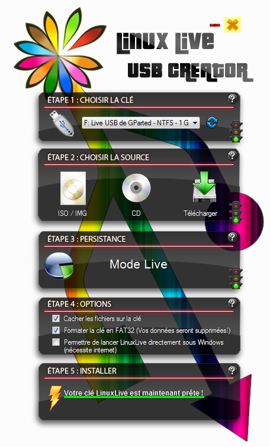

Vous ne trouvez pas toutes les qualités qu'on attribue à GNU/Linux et vous préférez Windows mais vous ne savez pas comment vous y prendre pour purement et simplement exterminer Tux ?
Ce tutoriel est pour vous !
La chasse au manchot est ouverte, à l'attaque :pirate: !
Pour bien commencer, un petit "cours" s'impose :p :
Le MBR (acronyme de Master Boot Record) d'un disque dur est le premier secteur de celui-ci : il s'agit des 512 premiers octets du disque dur. Ce secteur contient un code exécutable, qui s'exécute au démarrage du PC, avant même l'OS (Operating System : système d'exploitation). Ainsi, le MBR est indispensable au lancement de ce dernier.
Vous l'aurez compris : GRUB, le bootloader de GNU/Linux, se situe (en partie) dans le MBR, puisque qu'il permet justement de démarrer un OS...
Pourquoi dis-je "en partie" ? Tout simplement parce que GRUB est trop conséquent (sa taille) pour tenir entièrement dans le MBR, d'autant plus qu'il n'est pas seul dans celui-ci ! En effet, le MBR contient aussi la table des partitions, par exemple. GRUB est donc composé de deux parties : l'une se situant... dans le MBR et l'autre, directement dans la partition système de GNU/Linux.
Ca y est le "cours" est fini ! Vous avez survécu ? :-°
Ainsi, pour désinstaller GNU/Linux, il faut supprimer la partie de GRUB située dans le MBR du disque dur et, naturellement, les partitions de celui-ci...
Afin, de réaliser cette première étape, on va donc restaurer le MBR de Windows, qui va par la même occasion supprimer la partie de GRUB s'y trouvant. Nous allons faire ceci à l'aide du génialissime logiciel MBRFix.
C'est parti :pirate: !
On commence donc par booter (démarrer) notre PC sous Windows et on télécharge la dernière version de MBRFix. On extrait alors le fichier ZIP ainsi téléchargé (en faisant un clic-droit dessus et en choisissant l'option "Extraire tout...", si on n'a pas de logiciel du type WinRar).
Pour Windows 2000 et Windows XP :
On appuie simultanément sur touches "Windows" (le logo de celui-ci) et "R" du clavier, afin de lancer la fenêtre "Exécuter". On écrit alors "cmd" et on clique sur le bouton "OK", pour démarrer l'invite de commandes.
Pour Windows Vista et Windows 7 :
On lance le menu "Démarrer" de Windows et dans la zone "Rechercher" (pour Windows Vista) ou "Rechercher les programmes et fichiers" (pour Windows 7), on écrit "cmd". On constate alors que Windows trouve un programme nommé... "cmd" !
Nous faisons alors un clic-droit dessus, puis choisissons l'option "Exécuter en tant qu'administrateur".
Si l'UAC (User Account Control : contrôle du compte de l'utilisateur) de Windows est activé, nous devons alors cliquer sur le bouton "Continuer" (pour Windows Vista) ou "Oui" (pour Windows 7) qui apparaît, afin de confirmer notre demande d'exécution du programme en tant qu'administrateur.
Dans les deux cas, l'invite de commandes s'ouvre alors...
Cette invite de commandes, vous vous en doutez, on ne l'a pas lancée pour rien... Elle nous servira à utiliser MBRFix !
On se rend donc dans le répertoire où le logiciel se situe, par le biais de cette commande :
cd C:\Users\hOmer_dU_25\Desktop\mbrfix
Dans mon cas, le chemin à écrire est "C:\Users\hOmer_dU_25\Desktop\mbrfix". Mais celui-ci varie en fonction de l'endroit où le dossier de MBRFix a été extrait !
Par exemple, si le dossier "mbrfix" se trouve à la racine de la partition "C:" du disque dur, il faut entrer la commande :
cd C:\mbrfix
Nous écrivons alors la commande suivante :
MbrFix /drive 0 drivesize
Cette commande affiche la taille du disque dur "0".
Nous répétons la commande en changeant "0" par "1", puis "2", etc. afin de trouver le disque dur dans lequel sont installés Windows et GNU/Linux, que l'on reconnaît par la taille qu'il a. On retient alors le numéro de ce disque dur.
L'étape qui suit est quelque peu différente selon la version de Windows qu'on a...
Pour Windows 2000 et Windows XP :
Si Windows et GNU/Linux sont installés sur le disque dur numéro 0, on écrit alors :
MbrFix /drive 0 fixmbr /yes
Pour Windows Vista :
Il faut ajouter le paramètre "/vista" après "fixmbr". Par exemple, si Windows Vista, édition 64 bits, et GNU/Linux sont installés sur le disque dur numéro 1, il faut écrire :
MbrFix64 /drive 1 fixmbr /vista /yes
Pour Windows 7 :
Il faut ajouter le paramètre "/win7" après "fixmbr". Par exemple, on écrit la commande suivante, si Windows 7 et GNU/Linux sont installés sur le disque dur numéro 4 :
MbrFix /drive 4 fixmbr /win7 /yes
Dans les trois cas, on remarque que le numéro qui doit être écrit dans la commande correspond à celui que nous avons dû retenir précédemment...
Nous pouvons alors fermer l'invite de commandes.
Ca y est, on vient de restaurer le bootloader de Windows et par la même occasion de supprimer la partie de GRUB qui était dans le MBR !
Une fois le téléchargement terminé, il faut qu'on vérifie si l'image ISO de GParted a bien été téléchargée correctement. On va donc vérifier la somme MD5 de cette image ISO à l'aide de WinMD5Sum, que nous téléchargeons et installons.
Après avoir lancé WinMD5Sum, on choisit l'image ISO de GParted dans "File name". Après un court instant, on constate que la somme MD5 de notre image ISO apparaît...
La somme MD5 de l'image ISO que j'ai téléchargée est "9c2c06513b609bad55d18513704a8c4b"
Cette somme MD5, il faut donc qu'on la compare à la somme MD5 authentique de l'image ISO de GParted. En effet, s'il s'avère que les deux somme MD5 sont identiques, c'est que notre image ISO a été correctement téléchargée. On "copie" donc la somme MD5 authentique de l'image ISO de la version de GParted qui nous intéresse.
La somme MD5 authentique de l'image ISO de la version 0.4.6-1 de GParted est "9c2c06513b609bad55d18513704a8c4b"
Nous la "collons" ensuite dans le cadre intitulé "Compare" de WinMD5Sum. On clique enfin sur le bouton "Compare".
Normalement, une boîte de dialogue devrait s'ouvrir...
Youpi ! Mon image ISO de GParted a bien été téléchargée correctement !
Il se peut que chez vous, ce ne soit pas ce message qui s'affiche... C'est donc que votre image ISO de GParted est corrompue, non-conforme à l'originale ! Ainsi, vous devez re-télécharger l'image ISO de GParted et vérifier à nouveau sa somme MD5...
Etant donné qu'on a téléchargé une image ISO, vous vous en doutez, on va la graver sur un CD-R ou alors créer un Live USB de GParted : on a le choix !
Pour faire ceci, on insère un CD-R vierge dans le lecteur de disque de notre PC, on lance CDBurnerXP, on clique sur "Graver une image ISO" et ensuite sur le bouton "OK".
Une fois cela fait, on choisit l'image ISO de GParted dans "Sélectionner l'Image ISO à graver:" et on clique enfin sur le bouton "Graver le disque".
Quelques minutes plus tard, on a notre Live CD de GParted !

Faire un Live USB de GParted :
Pour cela, on branche une clé USB d'au moins 128 Mo (La taille de la clé USB dépend de celle de l'image ISO de GParted. En effet, si les versions futures de GParted auront une image ISO de 200 Mo, par exemple, il nous faudra alors une clé USB de 256 Mo, au minimum) à notre PC et on télécharge LinuxLive USB Creator (aussi appelé LiLi USB Creator), que nous lançons.
Une fois que LinuxLive USB Creator est opérationnel, nous choisissons alors la clé USB sur laquelle on souhaite installer GParted.
En l'occurrence, je décide de l'installer sur une clé USB de 1 Go.
Ensuite, il se peut qu'un message de ce type apparaisse :
Eh oui ! Ma clé USB est en NTFS...
On clique alors sur le bouton "OK".
Maintenant, nous devons choisir l'image ISO de GParted, en cliquant sur le bouton "ISO / IMG".
Le logiciel vérifie alors que notre fichier et la version de celui-ci est compatible. Une boîte de dialogue apparaît alors, dans laquelle nous cliquons sur le bouton "OK".
Par la suite, il nous faut modifier les options, afin que la clé USB soit formatée en FAT32. Même si c'est déjà le cas, on le fait tout de même : un fichier "caché" peut encore être présent sur la clé USB ! De plus, nous décochons la case "Permette de lancer LinuxLive directement sous Windows (nécessite internet)", option qui nous est inutile.
Enfin, nous pouvons lancer l'installation, en cliquant sur l'image représentant un éclair.
LinuxLive USB Creator nous demande alors une confirmation, quant au formatage en FAT32 de la clé USB, à laquelle nous répondons en cliquant sur le bouton "OK".
Après quelques instants, notre Live USB de GParted est prêt !
C'est bien beau d'avoir notre Live CD ou notre Live USB de GParted, mais encore faut-il s'en servir !
Aussi, on boot notre PC sur le Live CD ou le Live USB de GParted. Pour ceci, on redémarre donc notre PC, en veillant à avoir bien laissé le Live CD de GParted dans le lecteur de disque ou le Live USB de celui-ci branché au PC :-° ...
Mon PC a booté sur Windows ! Que faire ?
Pas d'inquiétude ! Il faut simplement modifier l'ordre de boot de votre PC via le BIOS de celui-ci...
Pour cela, redémarrez votre PC, et, pendant l'écran de boot (la toute première chose qui apparaît à l'écran), pressez sur la touche indiquée pour accéder au "Setup" (BIOS). Il s'agit souvent de la touche "Suppr" ("Del") ou de la touche "F2", mais cela dépend de la carte mère de votre PC...
Vous voilà alors dans le BIOS !
Si vous n'avez pas exactement cela, c'est normal (le BIOS peut varier d'un PC à un autre)...
Maintenant, à l'aide des flèches du clavier, rendez vous dans l'onglet "Boot" et choisissez l'ordre dans lequel l'ordinateur essaye de démarrer. En l'occurrence, on va demander au PC de démarrer sur le lecteur de disque avant de démarrer sur le disque dur.
Enfin, sauvegardez et quittez le BIOS. (Pour mon exemple, il faut donc appuyer sur la touche "F10" du clavier...)
Le PC boot alors sur le Live CD ou le Live USB de GParted.
Après quelques instants, GParted nous demande de faire un choix... Comme on souhaite lancer GParted "normalement", on choisit alors l'option suivante :
GParted Live (Default settings)
On patiente encore un peu...
GParted nous demande maintenant à nouveau de faire un choix, cette fois-ci concernent le keymap (c'est à dire le plan de codage clavier : par exemple, AZERTY ou QWERTY). Etant donné que nous allons utiliser essentiellement la souris, on n'a pas à se préoccuper de ceci. Ainsi, on choisit :
Don't touch keymap
Après un certain temps, on nous demande de choisir la langue de GParted (bien que qu'il n'y ait vraiment pas grand chose de traduit...). Dans notre cas, c'est le français qui nous intéresse, on va donc écrire :
08
On valide ensuite par le bias de la touche "Entrée" du clavier...
Nous remarquons que la première option qui nous est proposée permet de configurer automatiquement ce GUI, après quoi il se lancera :
(0) Continue to start X to use GParted automatically
Cette option est donc très intéressante pour nous ! Pour la choisir, rien de plus simple : on appuie juste sur la touche "Entrée" du clavier.
Une fois que GParted est bel et bien opérationnel, dans la barre d'outils, on clique sur "GParted", puis dans l'option "Périphériques", on clique sur le disque dur dans lequel sont installés Windows et GNU/Linux (il se reconnaît par la taille qu'il a, comme je l'ai déjà dis précédemment...).
Il faut ensuite qu'on localise les partitions de GNU/Linux (ce sont habituellement celles au format ext3 ou ext4 et la partition "linux-swap"). On fait un clic-droit sur chacune d'elles, on choisit l'option "Delete", et, ensuite, on clique sur le bouton "Apply", pour effectuer la suppression des partitions de GNU/Linux.
Une fois la suppression terminée, GNU/Linux est totalement supprimé du PC !
Maintenant, on peut naturellement ajouter l'espace non alloué (libre) ainsi obtenu à la partition de Windows. Pour cela, on sélectionne cette partition (qui est souvent en NTFS), on fait un clic-droit sur celle-ci, on choisit alors l'option "Redimensionner/déplacer" et on augmente la taille de la partition de Windows. Ce n'est pas plus difficile que cela ;) !
On note que cet espace non alloué doit se trouver juste avant ou juste après la partition de Windows, sans quoi on ne pourra pas l'utiliser pour augmenter la taille de cette partition. Mais normalement, ce doit être le cas... Sinon, on doit déplacer les partitions du disque dur (par le biais de "Redimensionner/déplacer") de manière à avoir cet espace non alloué au bon endroit.
On clique enfin sur le bouton "Apply" et on attend la fin du redimensionnement de la partition de Windows.
Pour finir, on ferme GParted et on double-clique sur le bouton "Exit" (dans le coin supérieur gauche de l'écran)...
Enfin, on clique sur "Reboot:" puis sur le bouton "OK". GParted se quitte alors.
Si on a utilisé un Live CD de GParted :
Le Live CD est alors éjecté et ce message apparaît :
Please remove the disc, close the tray (if any) and press ENTER to continue:
Nous retirons donc le Live CD du lecteur de disque et nous appuyons alors sur la touche "Entrée" du clavier, afin de redémarrer le PC.
Si on a utilisé un Live USB de GParted :
Le message suivant apparaît :
Please remove the USB flash drive and press ENTER to continue:
Nous débranchons donc le Live USB et nous appuyons alors sur la touche "Entrée" du clavier, afin de redémarrer le PC.
Dans les deux cas, on constate alors que Windows boot à nouveau... et sans GRUB :) !
J'espère que ce petit tutoriel vous aura aidé :) !